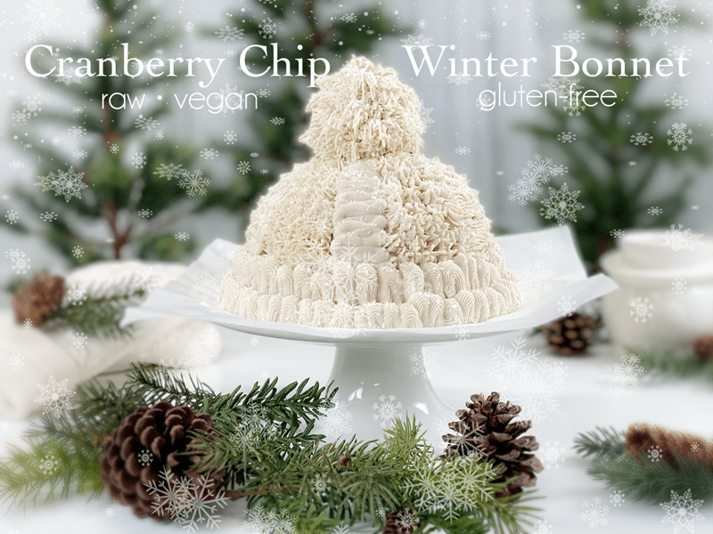
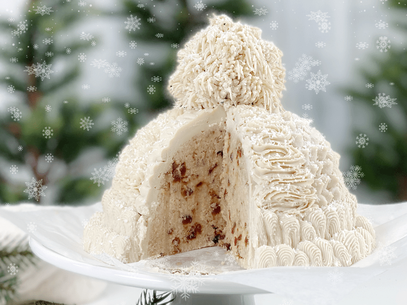

No knitting needles needed to make this cozy winter bonnet! With a variety of pastry tip shapes, you can create a knitted-wool look on your cake, too. And after your guests are finished admiring this culinary masterpiece, just slice it into a cranberry-chip-filled surprise. Today’s creation is raw (no baking required), vegan, and gluten-free. Heck, it doesn’t even require dehydration; it just requires some imagination and the desire to have fun.

I titled this recipe Cranberry Chip Winter Bonnet because the cake batter reminded me of my all-time favorite childhood cake — Betty Crocker Cherry Chip Cake, which my mother used to make every year. In fact, my mother still sends me Cherry Chip cake on my birthdays.
Actually–she sends the empty box with fun little notes written all over it since I no longer eat the ingredients used in it. I will post a photo of them toward the end of the post. I am going to put a pause on getting too caught up in childhood memories and dive into this recipe. I have a lot of technical details to cover in hopes of building your confidence so you will decide to make this cake yourself. Plus all the tips and tricks that I share can be used later down the road in other culinary creations. Ready?!

Cake Batter and Cake Shaping Tips
Cake Batter
- This recipe makes 3 cups of batter, so you might need to double the amount of batter, depending on the size of cake you plan on making. I doubled the batter for my creation.
Selecting the Cake Shape
- When selecting the cake mold (shape) I suggest using a mixing bowl that has an inner rounded bottom.
- Avoid a mold that is shallow and wide. Envision what a stocking hat looks like when on, and try to mimic that. The bowl I used was 6.25″ tall x 4.75″ wide.
- To determine how many cups of cake batter you will need, select the bowl/mold of choice and pour 3 cups of water in it to see how full it gets. Not enough? Add another 3 cups of water… you get the idea.
Taste and Texture
This cake doesn’t require baking or dehydration. The cake is creamy white, moist, and has beautiful chewy flecks of red dried cranberries laced throughout. Despite not being baked, it holds its form and slices up wonderfully. It is sweet as a cake should be, but not overwhelmingly so. The sweet and tart cranberries pair superbly with the coconut cake base, giving you a mouthwatering bite that keeps you coming back for more. Please be sure to leave a comment down below. Have a blessed day, amie sue
 Ingredients
Ingredients
Yields 3 cups batter